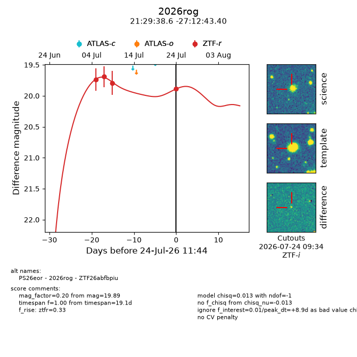
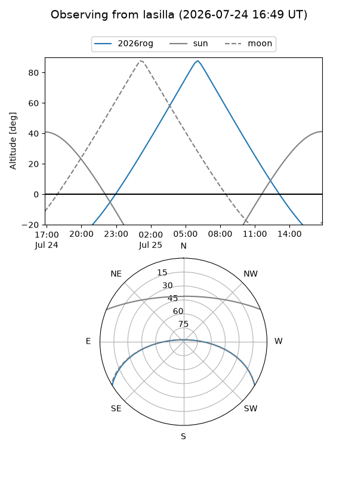
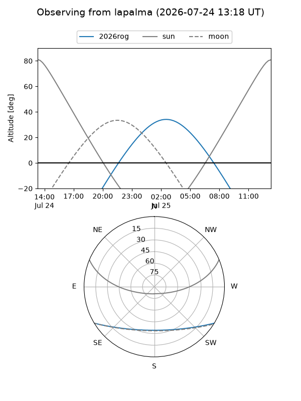
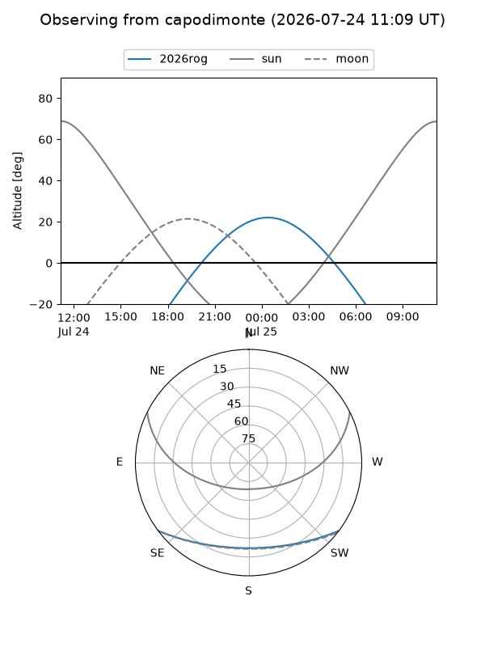
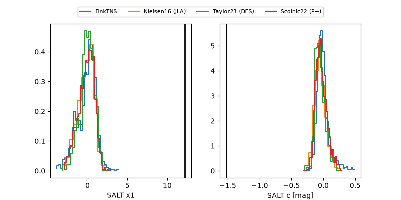

2026rog
Target 2026rog at 2026-07-24 11:46
Aliases and brokers:
FINK-ZTF: ztf.fink-portal.org/ZTF26abfbpiu
Lasair-ZTF: lasair-ztf.lsst.ac.uk/objects/ZTF26abfbpiu
ALeRCE-ZTF: alerce.online/object/ZTF26abfbpiu
YSE-PZ: ziggy.ucolick.org/yse/transient_detail/2026rog
TNS name: wis-tns.org/object/2026rog
Direct TNS query: direct search
alt names
ZTF26abfbpiu (ztf,fink_ztf)
2026rog (tns,yse)
PS26eor (panstarrs)
Coordinates:
equatorial (ra, dec) = 322.4109,-27.21205
equatorial (HMS+DMS) = 21:29:38.61,-27:12:43.40
galactic (l, b) = (20.6919,-45.43934)
Flags:
TNS type: nan
peak dt: +8.9
Photometry:
last ztfr=19.89
4 ztfr detections
Lightcurve

Visibility



Additional plots
